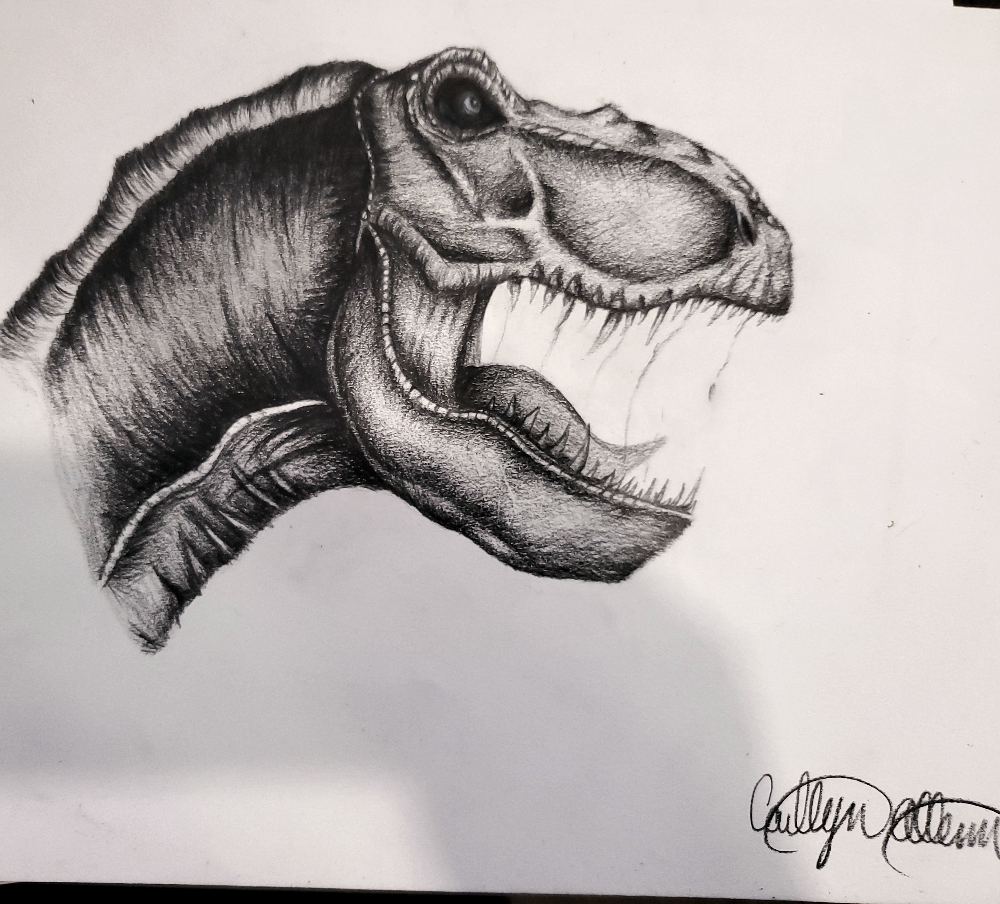
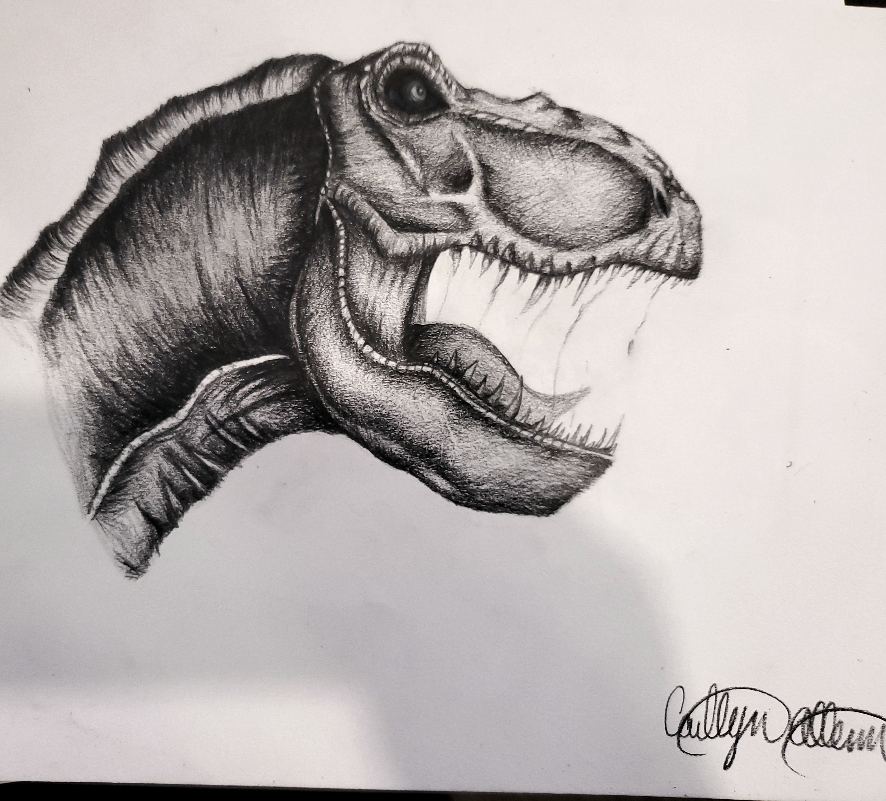

short story
This is my short story
'Yes, it finally arrived' I thought out loud to no one but myself. My telescope that I had ordered several months ago is now in my living room.
Grabbing my trusted box cutter and peeling away all the unnecessary packaging. Hours later, two glasses of wine down, and its finally put
together just in time to look at the stars. Parking it right in front of my upstairs window, adjusting the angle I get ready to look through my
telescope. Thinking I am going to see stars, all I see is... “Why does my head hurt?”, and how did I end up on the floor… wait this isn’t even my carpet.
What is this stuff...? Where’s my telescope… scratch that useless question. More importantly where the hell am I and how did I get here.
So many questions ran through my head at the same time trying to remember what happened. Maybe that’s why my head hurt I’m thinking to much.
Bingo! One problem solved on to the next one, and that being where the hell am I?
My work
 
Last page
Go back home

Last page
Go back home